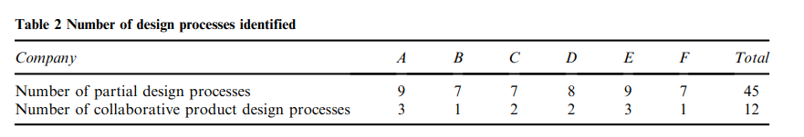
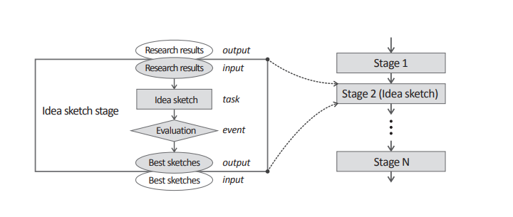
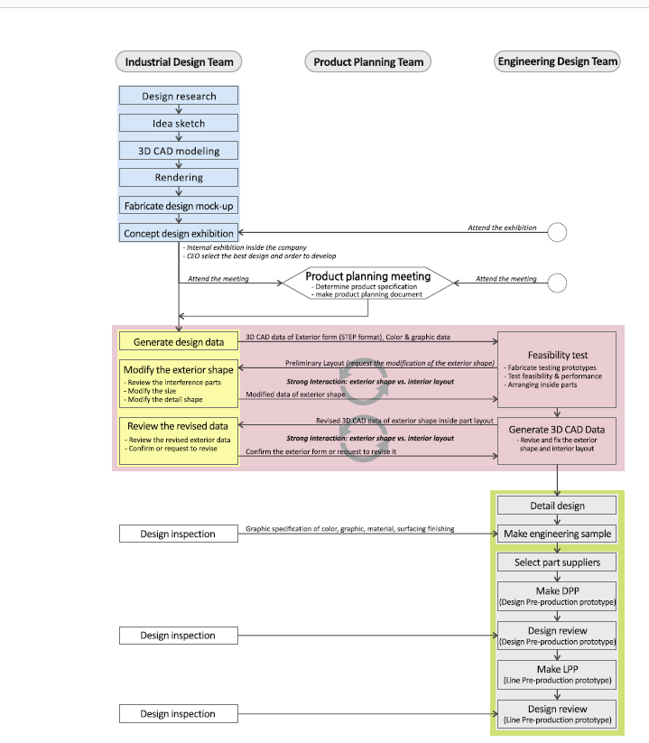

Assignment1 <<
Previous Next >> Assignment3
Assignment2
PDF檔心得
1.2確定設計過程
1.2.1確定每個人的設計過程
有經驗的儘管所有轉錄數據都包含與設計過程有關的信息，它們都與其他內容混合在一起，包括情況項目的目標，目標，角色，必要的技能和知識，我們首先提出通過審查相關文獻以識別“過程要素”來建立編碼框架用於構建設計過程的文件。
產品開發及其活動為信息過程。收集，創建，解釋，轉換和轉移。
Ulrich和Eppinger（2012）將其描述為必要的信息對於注入的最終結果以轉化當前的設計問題解決下一個問題，以降低不確定性，從而產生產出，直到最終的結果就形成了。這被建模為轉換將功能規格（輸入）轉換為人工規格（輸出）
（Takeda，Veerkamp，＆Yoshikawa，1990; Tomiyama＆Yoshikawa，1986）。
Browning和Ramasesh（2007）指出，採用信息處理的觀點未能捕獲完整的信息流
因為對交互的了解很少。他們認為確定組織單位之間的互動，因為它們會產生依賴性
建立可交付流程模式的活動之間。總之，從這個角度來看，過程建模的基本元素是
用IPO（InputeProcesseOutput）表示形式概括為“信息流”以及組織單位（人員，團隊，公司，等等。）。
工程設計過程模型
由Pahl等人提出。 （2007年）證明了每個階段。第一階段的輸入是“任務”，結果是“規範”再次進入下一階段。這樣，繪製連接輸入和結果的連續發展階段出來。關於“任務”和“設計活動”
任務和評估結果。通常，評估發生在相對在很短的時間內決定“前進，重複或下降”。因此，我們命名了這些類型的活動（評估，設計審查，登門檢查，決策-此時，我們有兩個編碼類別：“任務”和“事件”。總而言之，我們可以使用四個編碼對設計過程進行建模
類別； “任務”，“事件”，“信息流”和“互動”，並且可以是用階段的連接來表示。至此，設計階段流程可以用“ inputetask（設計活動）eevent（決策）以下內容描述瞭如何對過程元素進行編碼。
信息流：信息流是在任務或事件時生成的發生。它總是伴隨著輸入和輸出。
工程的輸入:
設計活動。我們對“從ID到ED的3D CAD數據”進行了編碼。
互動：發生任務或事件時，兩組經常
相互作用。例如，工業設計師檢查內部是否
工程設計師建議他們通過提供空間來修改空間
我們從每個轉錄的訪談數據中識別出流程要素。
我們盡可能用參與者自己的話語標記他們。我們用了字段註釋作為補充數據源。在這樣做的同時，我們安排按時間順序將編碼後的元素按流程圖格式連接構建部分設計過程。該方法被廣泛採用以可視化工業流程模型（Vergidis，Tiwari和Majeed，2008年）。我們也確定了設計過程中涉及的項目類型和目標
採訪數據。兩名研究人員執行了整個程序。一研究人員首先構建了部分設計流程，另一研究人員通過檢查採訪數據檢查了他們。結果，我們獲得了45部分公司使用7-9進行的部分設計過程（請參見表2）。

1.2.2確定協作產品設計流程
下一步是將每個公司的設計流程整合到協作中
通過“馬賽克方法”進行設計過程。我們首先收集了部分設計
公司中特定項目的流程。之後，我們通過比較和合併部分過程，合併過程元素。從工業設計師那裡提取的部分過程訪談數據提供了有關工業設計活動的豐富信息，包括與工程設計師的互動行為，但信息較少純工程設計活動。工程界也是如此設計。
我們將公司的工業設計師的部分流程合併到了圍繞工業設計活動重建設計流程。在同一時間，我們利用工程設計師提供的信息來補充並從工程設計方面加強設計活動。我們圍繞同一工程設計活動重新構建設計流程辦法。我們最終將這兩個設計過程合併為一個協作產品設計過程。在鑲嵌方法中，結合交叉檢查的部分過程
有助於提高可靠性和通用性。這明顯減少了構建信息不完整的流程的可能性
通過抵消彼此的信息。因此，“馬賽克方法”減少了構建錯誤過程的可能性。
最後，我們通過合併階段元素（輸入，任務，事件和輸出）放入框中，並用相關任務將其命名（請參見圖2）。例如，工業設計師開始繪製各種想法根據前一階段的研究結果繪製的草圖。然後，他們選擇一個通過評估獲得一些最佳草圖。根據選擇結果，他們決定進入下一階段或重複當前階段。因此，‘理想草圖階段由“研究結果（輸入），“想法草圖（任務）”，“評估”（事件）和“最佳草圖（輸出）”。

1.2.3簡化流程
一旦制定了每個公司的協作產品設計流程，我們對它們進行了分類，以確定其類型，目的和條件。但是，由於每個公司的流程都包含詳細的設計操作和信息，
直接在公司之間進行比較並不容易。從而，我們以“流程”的概念簡化了每個公司的設計流程塊以幫助其可比性，同時保持必要的特徵。
我們發現在一組小的連續階段中存在一種模式。那裡是完成所有連續階段的主要工作。完成後明確的新階段從另一項工作開始。我們將這些小階段定義為“流程塊”。其特點是初始輸入，內部迭代，決策，最終結果和不可逆的趨勢（圖4）。
內置的流程塊中的流程從初始輸入開始，跨小範圍運行裡面的階段。迭代或反饋可能在內部的小階段之間發生大塊。最後，他們對最終結果做出最終決定。
這是一個里程碑，指示該階段將跳到下一階段。
例如，在圖3中藍色方框中，該塊的主要工作是制定執行六個小階段的設計概念。當他們在渲染階段，如果渲染結果，他們可以回到構思草圖階段
對渲染評估事件不滿意。在最後階段，設計樣機，因為結果由高層管理人員確認，並且然後跳到“產品計劃會議”。
兩個流程塊之間的流程幾乎沒有機會在前一個結果進入下一個塊的輸入之後反轉。
跨團隊通常進行最終設計，並由每個部門的最高經理。返回上一個塊意味著它
無法滿足投放市場的時間表。因此，應該有一個最高管理層關於這個問題的決定。階段之間的反向迭代或反饋在實際情況中很少發生。它發生在一個塊中的各個階段之間。因此，似乎項目之間幾乎不可能放棄階段，但可能在階段之間。
我們通過其主要工作來命名流程塊。在命名塊時，
我們發現，“概念設計”一詞在工程上的用法有所不同
設計和工業設計。工程設計中的概念設計是關於通過開發廣泛的解決方案與產品的工作原理相關的技術概念（Haik＆Shahin，2010; Kroll，Condoor和Jansson，2001；烏爾曼，2009年）。但是，工業設計師在概念設計中決定產品樣式和交互的方向階段，以概念關鍵字，情緒板，想法表示草圖和用戶場景（Press＆Cooper，2003; Tovey＆Harris，1999;Vredenburg，Isensee，Righi和Design，2001年）。因此，我們標記了這個概念

Assignment1 <<
Previous Next >> Assignment3